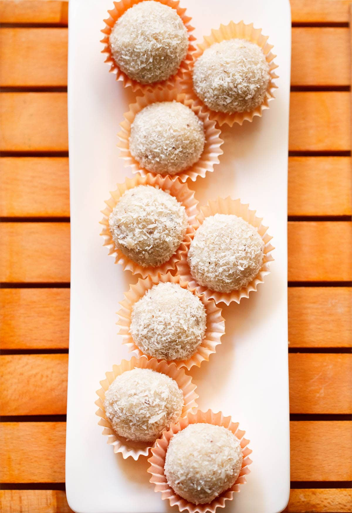

Coconut Ladoo recipe

Description
This coconut ladoo is a sweet delicious crowd pleaser and is made with just 3 ingredients!
This method involves making the ladoo using fresh coconut, condensed milk (milkmaid) and cardamom powder. An advantage of this method is that it is quick, easy and great for beginners.
Prep and keep aside all the ingredients before you begin cooking. For best taste and texture, I suggest to add freshly grated coconut. Though in a pinch you can opt to use frozen grated coconut or desiccated coconut.
To make laddu with desiccated coconut, I have included instructions in the steps below.
Ingredients
- 1.5 cups of tightly packed fresh grated coconut
- 1 teaspoon ghee
- 1/2 teaspoon green cardamom powder
- 1/2 can of sweetened condensed milk - 220 grams
- 1/3 cup fresh grated coconut or unsweetened desiccated coconut
- preferred chopped nuts or dry fruits - optional
Steps
- Heat 1 teaspoon of ghee in a frying pan or kadai. You can also use coconut oil instead of
- Add 1.5 cups of tightly packed grated coconut.
- Stir and sauté the coconut on low heat for 3 to 4 minutes but make sure they don’t brown. Roasting gets rid of the excess moisture.
- Now add 3/4 cup of sweetened condensed milk.
- Add 1/2 teaspoon of green cardamom powder.
- Mix well and cook the mixture on a low heat.
- The mixture should begin to thicken. Keep stirring regularly.
- Once the mixture leaves the sides of the pan and you see some coconut fat at the sides, turn off the heat.
- Pour the coconut ladoo mixture in another bowl or pan and allow it to cool.
- Once the mixture has cooled completely, pinch medium balls from the mixture and form ladoo.Rub ghee on the palm of your hands and shape the coconut ladoo. If the mixture is loose then you won’t be able to make the ladoo.
- Roll the ladoo in to the desiccated coconut or in fresh coconut until it is evenly coated.
- You can also make all of the coconut ladoo at the same time and roll in them in desiccated coconut.